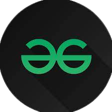
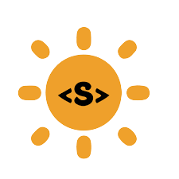
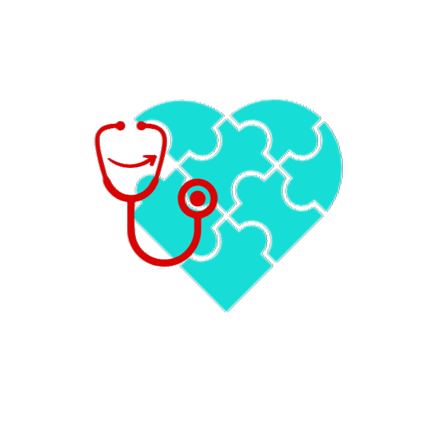

Hi there, My name is Avinash
and I am a

Work Experience

Campus Mantri - GeeksForGeeks (Jul'23 - Pre)
• Working with GFG team to create a coding culture in my
institute. • Motivating students to move a step ahead and bring a
coding enthusiasm in themselves.

Open Source Contributor - SSOC (Jun'23-Pre)
• Contributed few codes and raised some issues related to cpp
programming in Algorithm GitHub Repo by KumanLaxmi.

Core Team Member - MediStop (Apr'23 - Pre)
• Maintaining list of schemes, programs, funds, and various other
activities organised by government, NGOs, and others for the help
of economically weaker section. • Data Collection And Segregation
of various health centers.
Core Team Member - Coke&Code (Mar'23 - Pre)
• Setting Problems for Competitive Programming Contests •
Maintaining Terms of Services, Code of Conduct and Privacy &
Policies